1
Затерянные руины — где время остановилось
Древние города и постройки, где тишина звучит громче слов.
Открываем места, где живёт магия
На земле ещё остались места, где время замирает, а воздух пропитан чудом. Это волшебство природы.
Перейти к разделам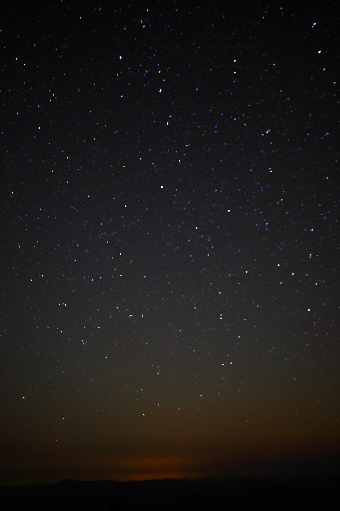
Древние города и постройки, где тишина звучит громче слов.
Места, которые кажутся декорациями к фантастическому фильму.
Места, куда путь неблизкий, поэтому там сохранилась тишина.
Места, где природа совместила противоположности.
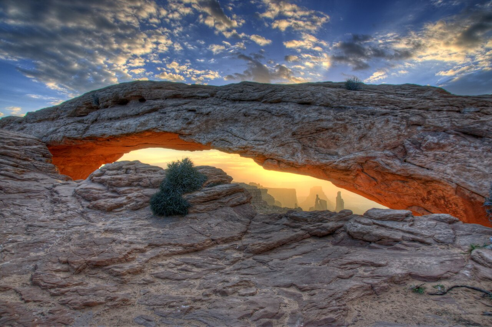
Главное место недели
Арка Меса — пример того, как время и стихии создают красоту на стыке противоположностей.
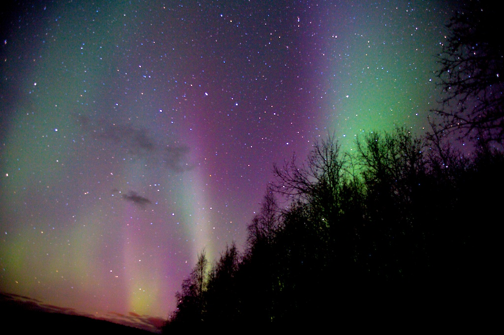
Северное сияние — природная иллюзия, которая обманывает взгляд.
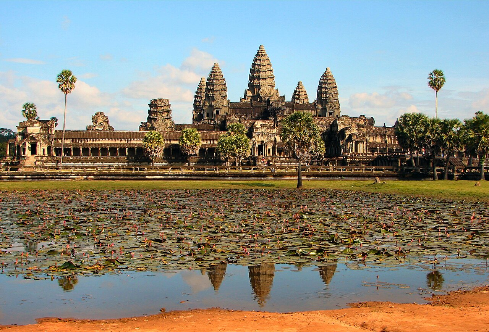
Ангкор-Ват — крупнейший религиозный памятник Камбоджи.
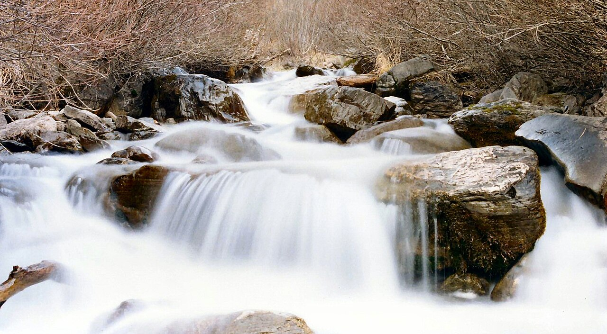
Водопады и тропы, до которых нужно добраться пешком.
Реальные локации, выглядящие как в сказке
Нажмите на карточку, чтобы открыть подробное описание места.
🇹🇭 Таиланд, национальный парк Умпханг.
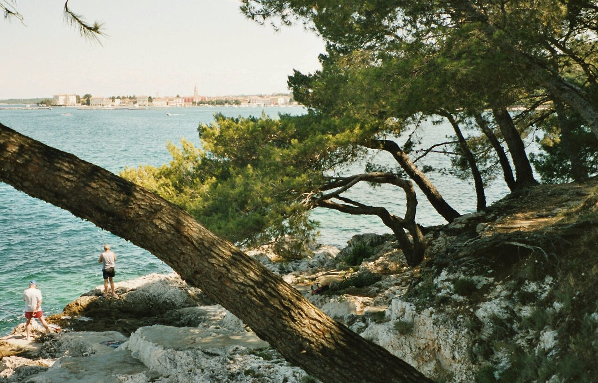
🇭🇷 Хорватия, тихие бухты Адриатического побережья.
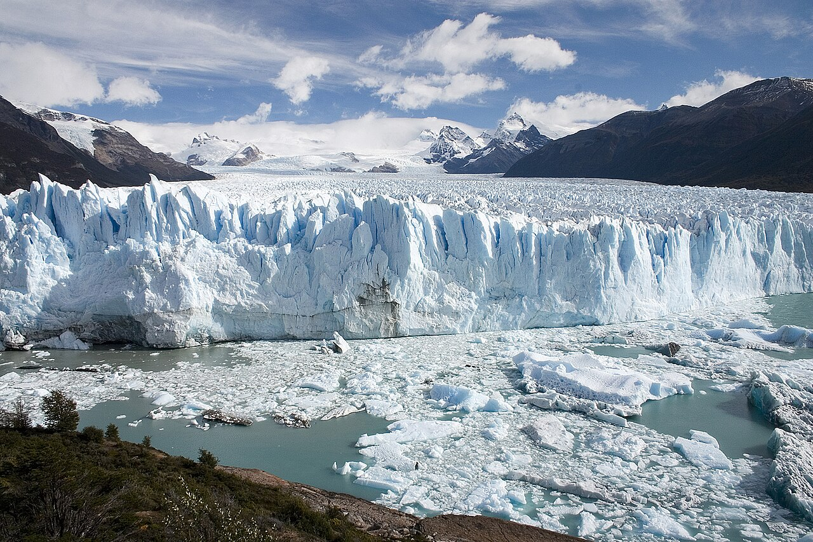
🇦🇷 Аргентина, национальный парк Лос-Гласьярес.
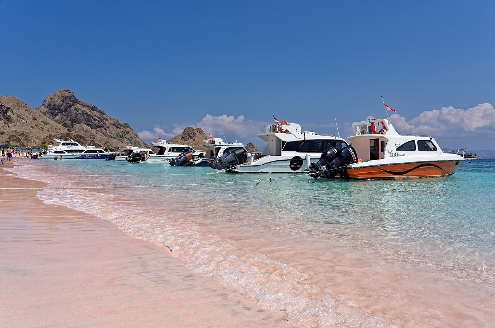
🇮🇩 Индонезия, остров Ломбок.
🇰🇭 Камбоджа, храмовый комплекс среди джунглей.
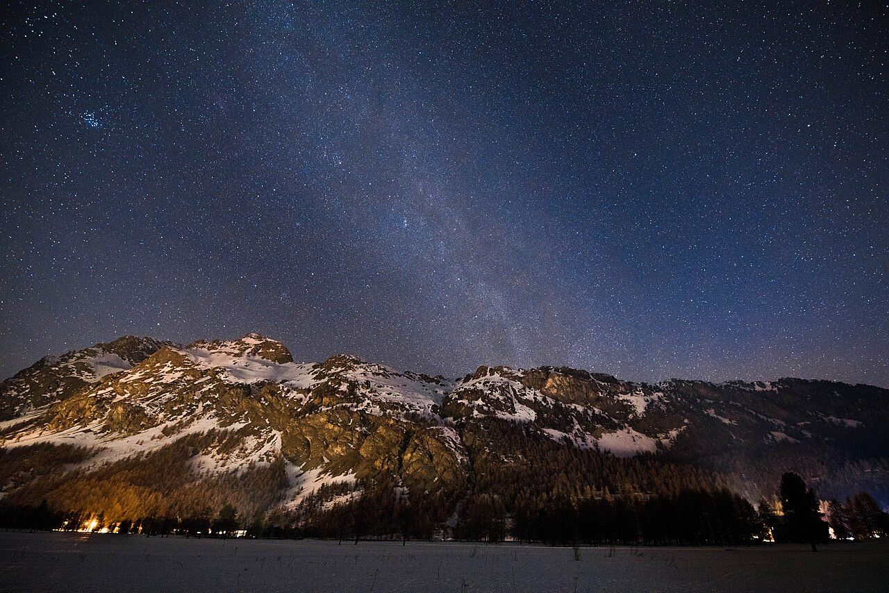
🇨🇭 Швейцария, горные озёра и чистое звёздное небо.
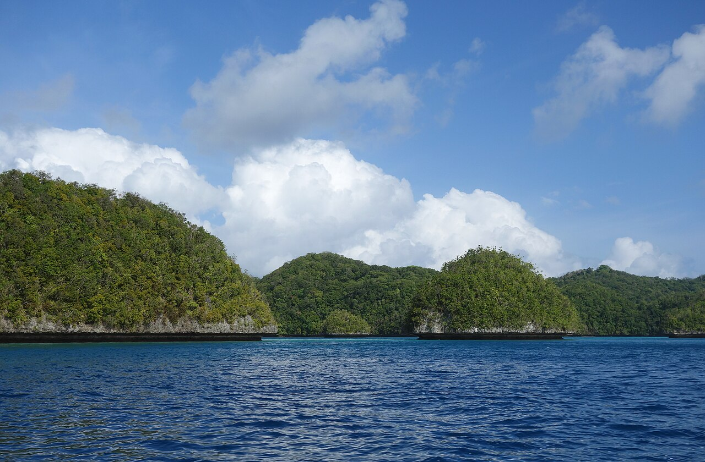
🇵🇼 Палау, острова, похожие на зелёные скульптуры.
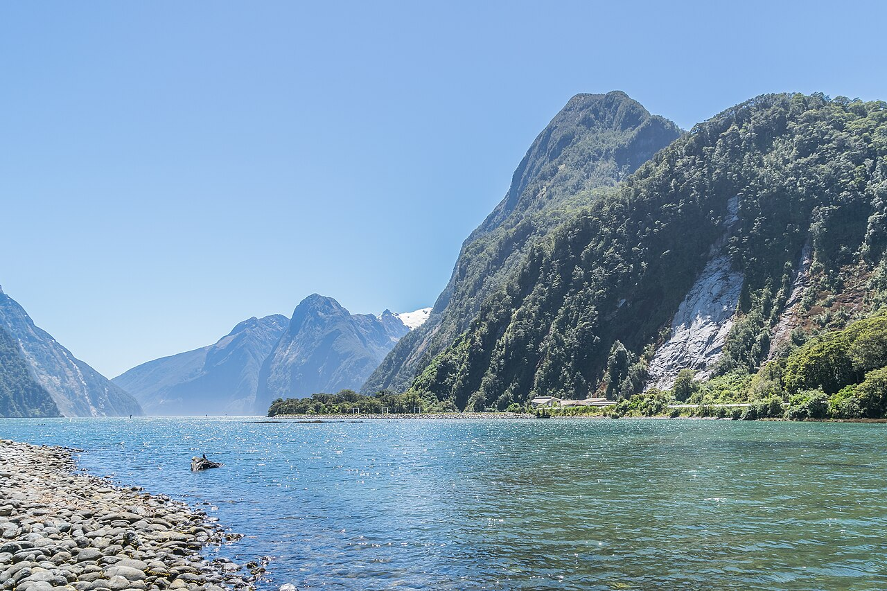
🇳🇿 Новая Зеландия, горные перевалы и туман.
🇳🇴 Норвегия, ночное небо над Тромсё.
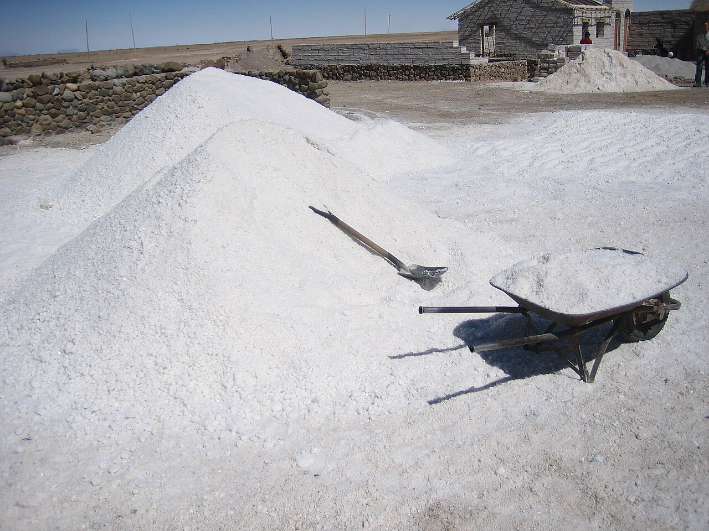
🇧🇴 Боливия, бескрайний солончак после дождя.
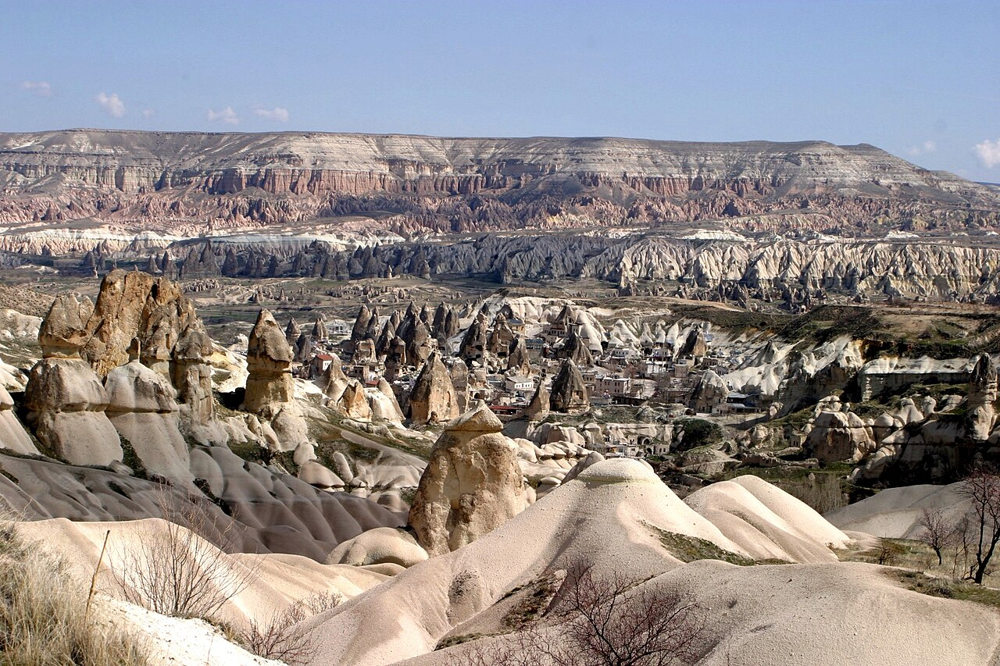
🇹🇷 Турция, долины и воздушные шары на рассвете.
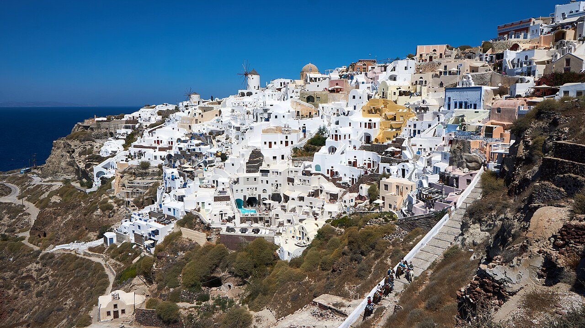
🇬🇷 Греция, островной город над Эгейским морем.